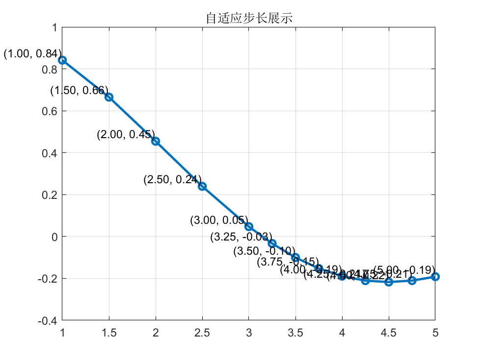

Matlab第十四周数值积分
Matlab选修作业记录（其他的简介懒得写了/2025-01-25/）
北邮Matlab选修 Week 14 数值积分
问题描述
编写复化自适应步长辛普森积分函数，实现对函数$f(x)=\frac{sin(x)}{x}$在区间$[1,5]$的积分，并分析各分段积分区间的自适应步长值。
程序设计
%simpson.m
function [I, steps] = simpson(fun, a, b, tol, varargin)
% 复化自适应步长辛普森公式求解数值积分，并返回区间划分步长
% 输入参数：
% fun：被积函数
% a, b：积分区间的端点
% tol：误差容忍度
% varargin：函数fun的附加参数
% 输出参数：
% I：求得的积分值
% steps：区间划分的步长列表
if nargin < 4 || isempty(tol)
tol = 1e-4; % 默认误差容忍度
end
[I, steps] = adaptiveSimpson(fun, a, b, tol, a, b, varargin{:});
end
function [I, steps] = adaptiveSimpson(fun, a, b, tol, fullA, fullB, varargin)
% 自适应辛普森积分辅助函数
% 使用递归方法自动调整积分步长以满足误差要求，并记录每次划分的中点
c = (a + b) / 2;
S1 = simpsonRule(fun, a, b, varargin{:});
S2 = simpsonRule(fun, a, c, varargin{:}) + simpsonRule(fun, c, b, varargin{:});
if abs(S1 - S2) < 15 * tol
I = S2 + (S2 - S1) / 15;
steps = c;
else
[IL, stepsL] = adaptiveSimpson(fun, a, c, tol/2, fullA, fullB, varargin{:});
[IR, stepsR] = adaptiveSimpson(fun, c, b, tol/2, fullA, fullB, varargin{:});
I = IL + IR;
steps = [stepsL, c, stepsR];
end
% 如果是最外层调用，则添加区间的起始和结束点
if a == fullA && b == fullB
steps = [a, steps, b];
end
end
function S = simpsonRule(fun, a, b, varargin)
% 辛普森规则计算函数
c = (a + b) / 2;
fa = feval(fun, a, varargin{:});
fb = feval(fun, b, varargin{:});
fc = feval(fun, c, varargin{:});
S = (b - a) * (fa + 4*fc + fb) / 6;
end
计算结果
%test1.m
% 定义函数
fun = @(x) sin(x)./x;
% 求积分，例如从 0 到 10，误差容忍度为 1e-5
[I, steps] = simpson(fun, 1, 5, 1e-5);
% 显示结果
fprintf('积分结果为: %f\n', I);
y_values = arrayfun(fun, steps);
% 绘制步长点
plot(steps, y_values, 'o-', 'LineWidth', 2);
title('自适应步长展示');
grid on;
% 增加注释
for i = 1:length(steps)
text(steps(i), y_values(i), sprintf('(%0.2f, %0.2f)', steps(i), y_values(i)), ...
'VerticalAlignment', 'bottom', 'HorizontalAlignment', 'right');
end
>> test1
积分结果为: 0.603848

最后修改于 2024-08-05